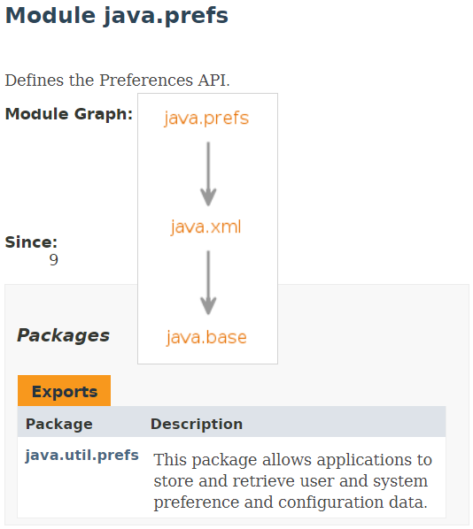
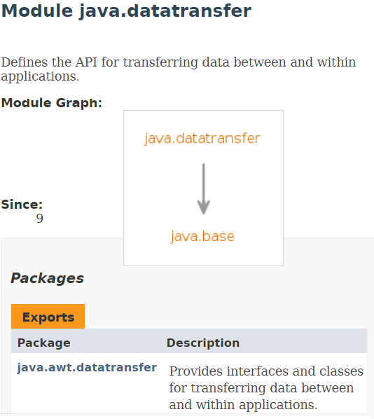

| Release | GA Date | Oracle | Azul | RedHat | AdoptOpenJDK | Corretto |
|---|---|---|---|---|---|---|
Java 8 |
03.2014 |
03.2022 (03.2025) |
03.2024 (03.2026) |
06.2023 |
09.2023 |
06.20231 |
Java 9 |
09.2017 |
03.2018 |
03.2020 (03.2021) |
- |
03.2018 |
- |
Java 10 |
03.2018 |
09.2018 |
09.2018 |
- |
09.2018 |
- |
Java 11 |
09.2018 |
09.2023 (09.2026) |
09.2028 (09.2030) |
10.2024 |
09.2022 |
08.2024 |
Java 12 |
03.2019 |
09.2019 |
09.2019 |
- |
09.2019 |
- |
Java 13 |
09.2019 |
03.2020 |
03.2023 (03.2024) |
- |
03.2020 |
- |
… |
||||||
Java 17 |
09.2021 |
09.2026 (09.2029) |
09.2031 (09.2033) |
? |
? |
? |
1 This distribution also contains JavaFX
Modularization is not mandatory.
Partial modularization is also possible.
Strong encapsulation
Well-defined interfaces
Explicit dependencies
Source: Marc Reinhold (https://twitter.com/mreinhold/status/882644292036026368)
Adapted from: Marc Reinhold (https://twitter.com/mreinhold/status/882644292036026368)
Adapted from: Marc Reinhold (https://twitter.com/mreinhold/status/882644292036026368)
Adapted from: Marc Reinhold (https://twitter.com/mreinhold/status/882644292036026368)
|
Modules shown in red color have been removed in Java 11. |
| JDK modules | ||||
|---|---|---|---|---|
jdk.accessibility |
jdk.httpserver |
jdk.jfr |
jdk.management.jfr |
jdk.scripting.nashorn |
1 Promoted to Java SE as java.net.http
2 Removed in Java 10
Execute java --list-modules to get the full list of platform modules.
|
| Module name | Package | Maven artifact |
|---|---|---|
java.activation |
javax.activation.* |
com.sun.activation:javax.activation:1.2.0 |
java.corba |
javax.activity.* |
org.jboss.openjdk-orb:openjdk-orb:8.1.2.Final |
java.transaction |
javax.transaction.* |
javax.transaction:javax.transaction-api:1.3 |
java.xml.bind |
javax.xml.bind.* |
org.glassfish.jaxb:jaxb-runtime:2.3.2 |
java.xml.ws |
javax.xml.ws.* |
com.sun.xml.ws:jaxws-ri:2.3.2 |
java.xml.ws.annotation |
javax.annotation.* |
javax.annotation:javax.annotation-api:1.3.2 |
(Code from prj-1)
package org.example.jpms;
import javax.xml.bind.annotation.XmlRootElement;
@XmlRootElement
public class Product {
private int id;
private String name;
private double price; // Using double for money is actually a bad idea
public Product() {
this(-1, "", 0);
}
public Product(int id, String name, double price) {
this.id = id;
this.name = name;
this.price = price;
}
public int getId() {
return id;
}
public void setId(int id) {
this.id = id;
}
public String getName() {
return name;
}
public void setName(String name) {
this.name = name;
}
public double getPrice() {
return price;
}
public void setPrice(double price) {
this.price = price;
}
@Override
public String toString() {
return name + ": " + price;
}
}(Code from prj-1)
package org.example.jpms;
import org.junit.jupiter.api.Assertions;
import org.junit.jupiter.api.Test;
public class ProductTest {
@Test
public void testToString() {
Product p = new Product(33, "spaghetti", 2.15);
Assertions.assertEquals("spaghetti: 2.15", p.toString());
}
}(Code from prj-1)
package org.example.jpms;
import javax.xml.bind.JAXBContext;
import javax.xml.bind.Marshaller;
public class XMLPrinter {
public static void main(String[] args) throws Exception {
Product product = new Product(100, "pizza", 3.25);
JAXBContext jaxbContext = JAXBContext.newInstance(Product.class);
Marshaller jaxbMarshaller = jaxbContext.createMarshaller();
jaxbMarshaller.setProperty(Marshaller.JAXB_FORMATTED_OUTPUT, true);
jaxbMarshaller.marshal(product, System.out);
}
}(Code from prj-1)
./gradlew run
<?xml version="1.0" encoding="UTF-8" standalone="yes"?>
<product>
<id>100</id>
<name>pizza</name>
<price>3.25</price>
</product>
Error: package javax.xml.bind.annotation does not exist
implementation 'org.glassfish.jaxb:jaxb-runtime:2.3.2'
The module descriptor specifies: |
A type in one module is accessible by code |
|

|
java.datatransfer exposes the sun.datatransfer package only to the java.desktop module |

|
package java.sql;
import java.util.logging.Logger;
public interface Driver {
public Logger getParentLogger() throws SQLFeatureNotSupportedException;
...
}Driver exposes types from the java.logging module in its own public API.
java.sql grants readability to java.logging to any module that depends upon it.
module java.sql {
requires transitive java.logging;
...
}
module java.se {
requires transitive java.compiler;
requires transitive java.datatransfer;
requires transitive java.desktop;
requires transitive java.instrument;
requires transitive java.logging;
requires transitive java.management;
...
}(Code from prj-4)
|
|
public class LZWCompressor
implements Compressor {
@Override
public double getCompressionRatio() {
return 0.48;
}
@Override
public byte[] compress(byte[] data) {
byte[] compressedData = null;
// ... (LZW implementation)
return compressedData;
}
}
public class HuffmanCompressor
implements Compressor {
@Override
public double getCompressionRatio() {
return 0.37;
}
@Override
public byte[] compress(byte[] data) {
byte[] compressedData = null;
// ... (Huffman implementation)
return compressedData;
}
}
(Code from prj-4)
|
|
import org.example.jpms.zip.Compressor;
module org.example.jpms.lzw {
requires org.example.jpms.zip;
provides Compressor with org.example.jpms.lzw.LZWCompressor;
}import org.example.jpms.zip.Compressor;
module org.example.jpms.huffman {
requires org.example.jpms.zip;
provides Compressor with org.example.jpms.huffman.HuffmanCompressor;
}(Code from prj-4)
|
|
public class App {
public static void main(String[] args) {
for(Compressor compressor: ServiceLoader.load(Compressor.class)) {
System.out.println(compressor.getClass().getSimpleName() +
" (" + compressor.getCompressionRatio() + ")");
}
}
}(Code from prj-5)
|
|
public class App {
public static void main(String[] args) {
for(Compressor compressor: Compressor.getCompressors()) {
System.out.println(compressor.getClass().getSimpleName() +
" (" + compressor.getCompressionRatio() + ")");
}
}
}Popular tools that use reflection:
|
|
|
|
module org.example.jpms {
requires java.xml.bind;
opens org.example.jpms to java.xml.bind;
}
open module org.example.jpms {
....
}
module org.example.jpms {
opens org.example.jpms.impl;
}
module org.example.jpms {
opens org.example.jpms.impl to org.example.tool;
}Options for the javac and java tools:
--add-exports module/package=other-module(,other-module)*--add-reads module=other-module(,other-module)*--add-opens module/package=target-module(,target-module)*Modules are resolved from the module path.
module path: allows efficient indexing based on information from the module descriptors
Specifying the module path with the modulepath: a list of directories of modules (containing exploded modules, modular jars or jmod files).javac and java tools:--module-path modulepath…
or
-p modulepath…
You can mix --class-path and --module-path.
Non-modular jars found on the module-path are turned into automatic modules.
A module descriptor is generated on the fly
requires transitive all other resolved modulesThe name of the automatic module:
Automatic-Module-Name attribute of the META-INF/MANIFEST.MF filejavac and java tools:--patch-module module=file(:file)*
Merges all classes from a list of files into the given module.
java
--module-path ...
--add-modules ...
--patch-module java.xml.ws.annotation=/path/to/my/lib/jsr305-3.0.2.jar
--module org.example.hello/org.example.hello.HelloWorld
(Code from prj-2)
Several adjustments need to be made to build.gradle
compileJava {
doFirst {
options.compilerArgs = ['--module-path', classpath.asPath]
classpath = files()
}
}
run {
inputs.property("moduleName", moduleName)
doFirst {
jvmArgs = [
'--module-path', classpath.asPath,
'--add-modules', moduleName
]
classpath = files()
}
}
(Code from prj-2)
compileTestJava {
inputs.property("moduleName", moduleName)
doFirst {
options.compilerArgs = [
'--module-path', classpath.asPath,
'--add-modules', 'org.junit.jupiter.api',
'--add-reads', "$moduleName=org.junit.jupiter.api",
'--patch-module', "$moduleName=" + files(sourceSets.test.java.srcDirs).asPath,
]
classpath = files()
}
}
test {
inputs.property("moduleName", moduleName)
doFirst {
jvmArgs = [
'--module-path', classpath.asPath,
'--add-modules', 'ALL-MODULE-PATH',
'--add-reads', "$moduleName=org.junit.jupiter.api",
'--patch-module', "$moduleName=" + files(sourceSets.test.java.outputDir).asPath,
'--add-opens', "$moduleName/org.example.jpms=org.junit.platform.commons"
]
classpath = files()
}
}(Code from prj-2)
import java.util.regex.Matcher
startScripts {
inputs.property("moduleName", moduleName)
doFirst {
defaultJvmOpts = [
'--module-path', 'LIB_DIR_PLACEHOLDER',
'--add-modules', moduleName,
]
}
doLast{
def bashFile = new File(outputDir, applicationName)
String bashContent = bashFile.text
bashFile.text = bashContent.replaceFirst('LIB_DIR_PLACEHOLDER',
Matcher.quoteReplacement('$APP_HOME/lib'))
def batFile = new File(outputDir, applicationName + ".bat")
String batContent = batFile.text
batFile.text = batContent.replaceFirst('LIB_DIR_PLACEHOLDER',
Matcher.quoteReplacement('%APP_HOME%\\lib'))
}
}(Code from prj-2)
plugins {
id 'application'
id "org.javamodularity.moduleplugin" version "1.4.0"
}
repositories {
jcenter()
}
ext.moduleName = 'org.example.jpms'
mainClassName = 'org.example.jpms.XMLPrinter'
dependencies {
implementation 'org.glassfish.jaxb:jaxb-runtime:2.3.2'
testImplementation 'org.junit.jupiter:junit-jupiter-api:5.3.1'
testRuntimeOnly 'org.junit.jupiter:junit-jupiter-engine:5.3.1'
}
test {
useJUnitPlatform()
testLogging {
showStandardStreams = true
}
}(Code from prj-3)
Configuring additional VM arguments for testing
--add-modules
java.logging
--add-reads
org.example.jpms=java.loggingThe "standard" approach
from the build script start a GradleBuild task that executes gradle jar with a sourceSet that includes all classes except module-info.java.
from the build script start a GradleBuild task that executes gradle jar with a sourceSet that includes only module-info.java.
(Code from prj-6)
The ModiTect approach
module-info.java file with the JavaParserUsage with the org.beryx.jar Gradle pluginplugins {
id 'java'
id 'org.beryx.jar' version '1.1.3'
}
sourceCompatibility = 1.8
targetCompatibility = 1.8
./gradlew jar
./gradlew -PjavaCompatibility=11 jar
Multi-Release: trueMETA-INF/versions/<n> directory, where <n> is a major Java version.
The |
How to prevent creating multi-release jars with the |
module-info.java files for the analyzed jarsThe ModiTect approach:
for each non-modularized artifact in the dependency graph:
ModiTect can be used with both Maven and Gradle.
<plugins>
<plugin>
<groupId>org.moditect</groupId>
<artifactId>
moditect-maven-plugin
</artifactId>
<executions>
...
</executions>
</plugin>
...
</plugins>
plugins{
id "java"
id "application"
id "org.moditect.gradleplugin"
version "1.0.0-beta1"
...
}
moditect {
...
}
The ModiTect approach (Code from prj-7)
buildscript {
repositories {
maven {
url "https://plugins.gradle.org/m2/"
}
maven {
url 'https://jitpack.io'
}
}
dependencies {
classpath "org.moditect:moditect-gradle-plugin:1.0.0-beta1"
}
}
plugins{
id "java"
id "application"
}
apply plugin: "org.moditect.gradleplugin"
repositories {
mavenCentral()
}
group = "org.moditect"
version = "2.0.0"
targetCompatibility = JavaVersion.VERSION_1_9
sourceCompatibility = JavaVersion.VERSION_1_9
ext {
moduleName = 'com.example'
vertxVersion = '3.5.0'
nettyVersion = '4.1.15.Final'
jacksonVersion ='2.9.0'
}
mainClassName = 'com.example.HelloWorldServer'
jar {
manifest {
attributes("Automatic-Module-Name": moduleName)
}
}
dependencies{
compile "io.vertx:vertx-core:$vertxVersion"
}
moditect {
addMainModuleInfo {
version = project.version
overwriteExistingFiles = false
jdepsExtraArgs = ['-q']
module {
mainClass = mainClassName
moduleInfo {
name = moduleName
exports = 'com.example to io.vertx.core;'
}
}
}
addDependenciesModuleInfo {
jdepsExtraArgs = ['-q']
modules {
module {
artifact "com.fasterxml.jackson.core:jackson-core:$jacksonVersion"
moduleInfo {
name = 'com.fasterxml.jackson.core'
}
}
module {
artifact "com.fasterxml.jackson.core:jackson-annotations:$jacksonVersion"
moduleInfo {
name = 'com.fasterxml.jackson.annotations'
}
}
module {
artifact "com.fasterxml.jackson.core:jackson-databind:$jacksonVersion"
moduleInfo {
name = 'com.fasterxml.jackson.databind'
}
}
module {
artifact "io.netty:netty-common:$nettyVersion"
moduleInfo {
name = 'io.netty.common'
}
}
module {
artifact "io.netty:netty-buffer:$nettyVersion"
moduleInfo {
name = 'io.netty.buffer'
}
}
module {
artifact "io.netty:netty-codec:$nettyVersion"
moduleInfo {
name = 'io.netty.codec'
}
}
module {
artifact "io.netty:netty-resolver:$nettyVersion"
moduleInfo {
name = 'io.netty.resolver'
}
}
module {
artifact "io.netty:netty-transport:$nettyVersion"
moduleInfo {
name = 'io.netty.transport'
}
}
module {
artifact "io.netty:netty-codec-dns:$nettyVersion"
moduleInfo {
name = 'io.netty.codec.dns'
}
}
module {
artifact "io.netty:netty-codec-http2:$nettyVersion"
moduleInfo {
name = 'io.netty.codec.http2'
}
}
module {
artifact "io.netty:netty-resolver-dns:$nettyVersion"
moduleInfo {
name = 'io.netty.resolver.dns'
}
}
module {
artifact "io.netty:netty-transport-native-unix-common:$nettyVersion"
moduleInfo {
name = 'io.netty.channel.unix'
}
}
module {
artifact "io.netty:netty-transport-native-epoll:$nettyVersion"
moduleInfo {
name = 'io.netty.channel.epoll'
}
}
module {
artifact "io.netty:netty-transport-native-kqueue:$nettyVersion"
moduleInfo {
name = 'io.netty.channel.kqueue'
}
}
module {
artifact "io.netty:netty-handler:$nettyVersion"
moduleInfoSource = '''
module io.netty.handler {
exports io.netty.handler.flow;
exports io.netty.handler.flush;
exports io.netty.handler.ipfilter;
exports io.netty.handler.logging;
exports io.netty.handler.ssl;
exports io.netty.handler.ssl.ocsp;
exports io.netty.handler.ssl.util;
exports io.netty.handler.stream;
exports io.netty.handler.timeout;
exports io.netty.handler.traffic;
}
'''
}
module {
artifact "io.netty:netty-codec-socks:$nettyVersion"
moduleInfo {
name = 'io.netty.codec.socks'
}
}
module {
artifact "io.netty:netty-handler-proxy:$nettyVersion"
moduleInfo {
name = 'io.netty.handler.proxy'
}
}
module {
artifact "io.netty:netty-codec-http:$nettyVersion"
moduleInfo {
name = 'io.netty.codec.http'
}
}
module {
artifact "io.vertx:vertx-core:$vertxVersion"
moduleInfo {
name = 'io.vertx.core'
requires = '''
static log4j.api;
static log4j;
static slf4j.api;
*;
'''
exports = '''
!*impl*;
*;
'''
uses = '''
io.vertx.core.spi.VertxFactory;
io.vertx.core.spi.VerticleFactory;
io.vertx.core.spi.FutureFactory;
io.vertx.core.spi.BufferFactory;
'''
}
}
}
}
createRuntimeImage {
outputDirectory = file("$buildDir/jlink-image")
modules = ['com.example']
launcher {
name = 'helloWorld'
module = 'com.example'
}
compression = 2
stripDebug = true
}
}The "badass" approach
This approach is taken by the badass-jlink Gradle plugin.
(Code from prj-8)
plugins {
id 'application'
id "org.javamodularity.moduleplugin" version "1.4.0"
id 'org.beryx.jlink' version '2.5.0'
}
repositories {
jcenter()
}
dependencies {
implementation "io.vertx:vertx-core:3.5.0"
}
ext.moduleName = 'com.example'
mainClassName = "com.example/com.example.HelloWorldServer"
jlink {
options = ['--strip-debug', '--compress', '2', '--no-header-files', '--no-man-pages']
mergedModule {
additive = true
uses 'io.vertx.core.spi.VertxFactory'
uses 'io.vertx.core.spi.VerticleFactory'
uses 'io.vertx.core.spi.FutureFactory'
uses 'io.vertx.core.spi.BufferFactory'
}
}Approach:
This approach is taken by the badass-runtime Gradle plugin.
(Code from prj-9)
plugins {
id 'application'
id "org.beryx.runtime" version "1.1.5"
}
repositories {
jcenter()
}
dependencies {
implementation "io.vertx:vertx-core:3.5.0"
}
mainClassName = "com.example.HelloWorldServer"
runtime {
options = ['--strip-debug', '--compress', '2', '--no-header-files', '--no-man-pages']
modules = ['java.naming', 'java.compiler', 'java.logging', 'jdk.unsupported']
}